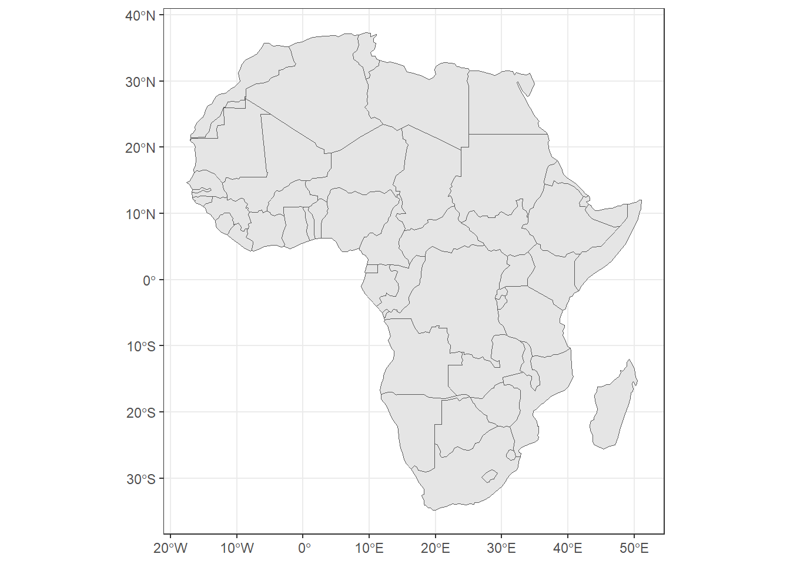

#| echo: true
#| eval: true
library(rnaturalearth)
library(ggplot2)Warning: package 'ggplot2' was built under R version 4.3.3world <- ne_countries()
africa <- ne_countries(continent = "africa")
france <- ne_countries(country = "france")Climate & weather
Land cover
Soil data
Ecoregions
Protected areas
Country boundaries
Socio-economics
Elevation & Bathymetry
Satellite data
WorldClim

Downloadable GeoTiff zipped files of Average minimum temperature (°C), average maximum temperature (°C) and total precipitation (mm), at resolutions from 30 seconds (~1 km2 at the equator) to 10 minutes (~340 km2).
Chelsa
Climatologies at high resolution for the earth’s land surface areas is a very high resolution (30 arc sec, ~1km) global downscaled climate data set
Technical specifications PDF : read it before you download anything !
Meta data or data paper…?
Corine Land Cover
CORINE Land Cover (CLC) is a pan-European land cover and land use inventory with 44 thematic classes, ranging from broad forested areas to individual vineyards
Updated every six years (most recent in 2018).
Copernicus
Earth observation component of the European Union’s Space programme, looking at our planet and its environment to benefit all European citizens. It offers information services that draw from satellite Earth Observation and in-situ (non-space) data.
At the heart of Copernicus is a constellation of satellites – the Sentinels – that make a huge number of daily observations of the Earth ecosystem.
Each satellite has its specificities and you should read about them before anything else.
Download data through many different portals: Copernicus Atmosphere Monitoring Service (CAMS) Portal, Copernicus Marine Monitoring Service (CMEMS) Portal, Copernicus Land Monitoring Service where Corine is just one of them…
WorldCover
WorldCover provides the first global land cover products for 2020 and 2021 at 10m resolution, developed and validated in near-real time based on Sentinel-1 and Sentinel-2 data.
Data access protocol here.
HWSD
Harmonized World Soil Database is a 30 arc-second raster database with over 15 000 different soil mapping units that combines existing regional and national updates of soil information worldwide.
Data access description here.
SoilTemp
Global database of microclimate time series (soil and near-surface temperatures, soil moisture, …) and associated species data for use in ecology and beyond.
100.000 time series from more than 100 countries across the globe, submitted by more than a thousand data contributors. The database is still under development and data is not yet open access.
Metadata of the first part of our database can however already be freely explored here.
WWF MEOW
Marine Ecoregions of the World: A Bioregionalization of Coastal and Shelf Areas
Super easy shapefile download here!
WWF TEOW
Terrestrial Ecoregions of the World
Super easy shapefile download here!
WDPA
Most comprehensive global database of marine and terrestrial protected areas. It is a joint project between UN Environment Programme and the International Union for Conservation of Nature (IUCN).
Interactive exploration here.
And a user guide PDF
GADM
GADM provides maps and spatial data for all countries and their sub-divisions.
Browse our maps or download the data by country.
Natural Earth
Natural Earth is a public domain map dataset available at 1:10m, 1:50m, and 1:110 million scales. Featuring tightly integrated vector and raster data.
Available features list here.
Also, check ou the R package rnaturalearth:
#| echo: true
#| eval: true
library(rnaturalearth)
library(ggplot2)Warning: package 'ggplot2' was built under R version 4.3.3world <- ne_countries()
africa <- ne_countries(continent = "africa")
france <- ne_countries(country = "france")#| echo: true
#| eval: true
theme_set(theme_bw())
ggplot(africa) + geom_sf()
DEM
Digital Elevation Model.
Plenty available, but main ones are listed here.
Bio-oracle
Essential physical, chemical, biological and topographic data layers with global extent and uniform resolution for modelling the distribution of marine biodiversity.
Download manager here.
Also features bathymetry.
LandSat
Joint program of the USGS and NASA from 1972 through the present day. Today the Landsat satellites image the entire Earth’s surface at a 30-meter resolution about once every two weeks, including multispectral and thermal data.
Check out LandSat collections here.
Modis
The Moderate Resolution Imaging Spectroradiometer (MODIS) sensors on NASA’s Terra and Aqua satellites have been acquiring images of the Earth daily since 1999, including daily imagery, 16-day BRDF-adjusted surface reflectance, and derived products such as vegetation indices and snow cover.
Check out Modis collections here
/! Satellite data is quite technical. Make sure you read the documentation - it’s easy to get lost.
FAO
Food and Agricultural Organization has a variety of statistical data on food, agriculture and the sustainable management of natural resources.
Free and unrestricted access to 22 major databases. Check out portals list here.